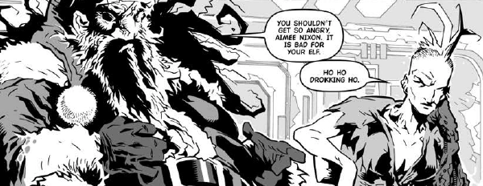

The Low Life is a low-rent, crime-riddled area of Mega-City One, and the story focuses on the exploits of the local Wally Squad (i.e. undercover) Judges. Initially, this was highly gritty and anchored around the emotionally and physically broken Aimee Nixon, but segued more into comedy with the unavoidable allure of witnessing Dirty Frank self-referencing Dirty Frank.
Art by Simon Coleby
| Story Title | Parts | Pages | w indicates a wraparound coverCovers | Year(s) | Issues | Writer | Artist | Colourist | Letterer |
|---|---|---|---|---|---|---|---|---|---|
Linked to: [Aimee Nixon] [Dirty Frank]Paranoia | 10 | 52 | 1390: Henry Flint 1394: Henry Flint 2 | 2004 | 1387-1396 | Rob Williams | Henry Flint | [greyscale] | Ellie de Ville |
Linked to: [Aimee Nixon] [Fatties]Heavy Duty | 3 | 15 | 0 | 2004 | 1397-1399 | Rob Williams | Henry Flint | [greyscale] | Ellie de Ville |
Llinked to [Dirty Frank]Rock and a Hard Place | 4 | 20 | 1428: Henry Flint 1 | 2005 | 1425-1428 | Rob Williams | Simon Coleby | [greyscale] | Tom Frame |
Linked to: [Aimee Nixon] [Dirty Frank]He's Making a List | 1 | 10 | 0 | 2005 | p2006 | Rob Williams | Simon Coleby | [greyscale] | Tom Frame |
Llinked to [Aimee Nixon]Con Artist | 7 | 35 | 1484: Steve Roberts 1489: Dylan Teague 2 | 2006 | 1484-1490 | Rob Williams | Simon Coleby | [greyscale] | Ellie de Ville |
Llinked to [Dirty Frank]Baby Talk | 4 | 20 | 1521: Simon Coleby and Chris Blythe 1 | 2007 | 1521-1524 | Rob Williams | Simon Coleby | [b&w] | Annie Parkhouse |
Linked to: [Aimee Nixon] Judge DreddWar Without Bloodshed | 4 | 36 | M271: Steve Yeowell & Chris Blythe (C) 1 | 2008 | M271-M274 | Rob Williams | Rufus Dayglo | [greyscale] | Ellie de Ville |
Linked to: [Aimee Nixon] [Dirty Frank]Creation | 8 | 40 | 1624: D'Israeli 1631: D'Israeli 2 | 2009 | 1624-1631 | Rob Williams | D'Israeli | [greyscale] | Ellie de Ville |
Linked to: [Aimee Nixon] [Dirty Frank]Jive Turkey | 1 | 8 | 0 | 2009 | p2010 | Rob Williams | Smudge | [greyscale] | Simon Bowland |
Linked to: [Aimee Nixon] [Dirty Frank] Cameo from Dredd.Hostile Takeover | 10 | 51 | 1705: Neil Roberts 1 | 2010 | 1700-1709 | Rob Williams | D'Israeli | [greyscale] | Ellie de Ville |
Linked to: [Aimee Nixon] [Dirty Frank]The Deal | 12 | 60 | 1752: D'Israeli 1761: D'Israeli 2 | 2011 | 1750-1761 | Rob Williams | D'Israeli | [greyscale] | Ellie de Ville |
| Trifecta | |||||||||
From The Simping Detective Part of the Trifecta build‑up.Jokers to the Right | 8 | 42 | 1804: Cliff Robinson & Dylan Teague (C) 1809: Tiernen Trevallion 2 | 2012 | 1804-1811 | Simon Spurrier | Simon Coleby | [spot color] | Simon Bowland |
Linked to: [Dirty Frank] The Kleggs Judge Dredd [Judge Smiley] [Sensitive Klegg] The Simping Detective Part of the Trifecta build‑up.Saudade | 7 | 41 | 1805: D'Israeli 1811: D'Israeli 2 | 2012 | 1805-1811 | Rob Williams | D'Israeli | [b&w] | Ellie de Ville |
From Judge Dredd Part of the Trifecta build‑up. Featuring Judge Buell.The Cold Deck | 6 | 36 | 1808: Edmund Bagwell 1 | 2012 | 1806-1811 | Al Ewing | Henry Flint | Chris Blythe | Annie Parkhouse |
Linked to: DeMarco [Dirty Frank] [Judge Griffin] Judge Hershey [Judge Maitland] [Judge McGruder] [Judge Smiley] [Raptaur] [Sensitive Klegg] Has three supertitles: ‑ Judge Dredd ‑ Low Life ‑ The Simping DetectiveTrifecta | 1 | 28 | Cliff Robinson & Dylan Teague (C) 1 | 2012 | 1812 | Al Ewing Simon Spurrier Rob Williams various | Carl Critchlow | <-- | Simon Bowland |
Llinked to [Dirty Frank]The Really Big Christmas Sleep | 1 | 6 | 0 | 2014 | p2015 | Rob Williams | D'Israeli | [greyscale] | Simon Bowland |
| >> Features << | |||||||||
From ComicanaTrifecta: Best Laid Plans | 1 | 3 | 0 | 2013 | M333 | Michael Molcher | reprints & designs | <-- | n/a |
| year | episodes | pages |
| 1999 | 0 | 0 |
| 2000 | 0 | 0 |
| 2001 | 0 | 0 |
| 2002 | 0 | 0 |
| 2003 | 0 | 0 |
| 2004 | 13 | 67 |
| 2005 | 5 | 30 |
| 2006 | 7 | 35 |
| 2007 | 4 | 20 |
| 2008 | 4 | 36 |
| 2009 | 9 | 48 |
| 2010 | 10 | 51 |
| 2011 | 12 | 60 |
| 2012 | 22 | 147 |
| 2013 | 1 | 3 |
| 2014 | 1 | 6 |
| 2015 | 0 | 0 |
| 2016 | 0 | 0 |
| 2017 | 0 | 0 |
| 2018 | 0 | 0 |
| 2019 | 0 | 0 |
Comic strip data (excludes other content):